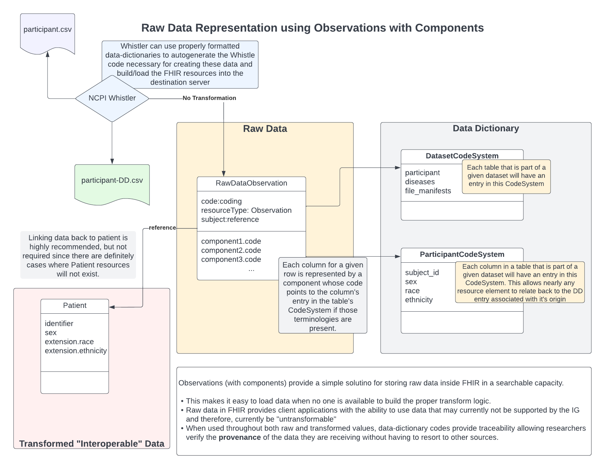
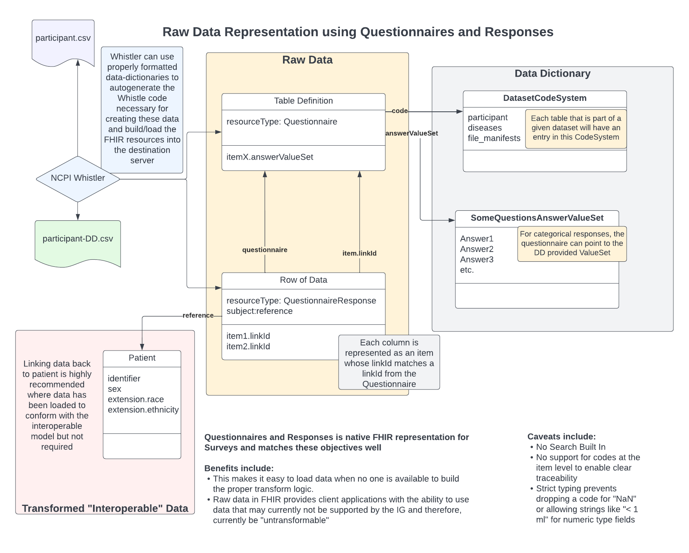

NCPI FHIR Implementation Guide
0.2.0 - ci-build
NCPI FHIR Implementation Guide - Local Development build (v0.2.0). See the Directory of published versions
There are a number of reasons to support representing tabular data in FHIR whether or not it is expected that the data will be fully transformed to meet the appropriate FHIR representation for interoperable data. These include:
 FHIR Observations are rich resource structures that provide a direct link to a subject, which can be a Patient or a group of Patients) and an optional focus which can point to any other resource. There is also the possibility to link the observation to an encounter. Each observation can have 0 or more component entries.
Components can contain only a small number of properties of which we’ll use only a few.
In general, each row will always refer to a single subject. This is true even for rows that describe something like a sample which may have been extracted from a subject–ultimately, one can trace that sample back to the original source, which would be the subject. The Observation’s subject property is a reference, which we’ll assume will point to the appropriate Patient resource.
Having a subject present for these resources makes it possible for FHIR users to collect all of the raw data for a given patient.
When attempting to automate the construction of these resources, it is possible that the actual subject’s ID will not be present in the table. For instance, we have received files where the patient’s ID was able to extracted from the sample ID, so only the sample ID was provided. For these scenarios, NCPI whistler is not able to link those rows back to the patient.
There are a number of advantages of using Observations with components to represent raw data:
Beyond linking back to the subject, it is possible that we might want to link back to slightly more specific resources as well.
It should be noted that NCPI Whistler does not support either of these and there may not be plans to support them in the future.
For data like a file that contains data related specifically to a sample or is the result of processing done on a VCF, it is reasonable to suggest one could link a given row back to the original source. For samples, this would mean that, in addition to having a valid subject, the focus could point back to the appropriate Specimen resource. Out from a process run, may have a focus that points either to the DocumentReference or possible the Task related to the data’s origins.
In the case of many task related output, there may not really be a single Patient. In these cases, subject may point to a group of Patients or just be missing altogether.
For some data tables, it is easy to imagine they are describing the outcome of a single encounter which will be realized by during a transformation. It seems reasonable that such a relationship could be captured for these resources.
 FHIR R4 natively provides 2 resources to support survey instruments in FHIR along with their responses: Questionnaire and QuestionnaireResponse. These are rich resources intended to support the types of surveys that may be used during routine medical care. As a result, these fit nicely alongside our objectives for capturing raw research data.
There are two components to this model:
Each questionnaire will represent the “blue print” associated with a single dataset table where each of the table’s columns are represented as individual items. Each of these items has a single type property which defines the actual type of data that is expected from the matching responses. A string property, linkId, is used to differentiate each column in a given Questionnaire from the others. For items of type, choice, an additional property, answerValueSet, is used to define a list of codes which can be assigned in the responses.
For the code, we can link back to the data-dictionary’s entry for the table in the dataset CodeSystem.
Each Questionnaire must have a unique URL.
Each response represents a single row from the table their corresponding Questionnaire represents. The response refers back to the questionnaire by way of providing the property, questionnaire, the value from the corresponding Questionnaire’s url property.
Each item must have a linkId that matches one of the linkIds from the Questionnaire and their valueX must correspond to the type specified by the item’s type definition. This will fail during FHIR validation if the data type is not what the Questionnaire specified it should be.